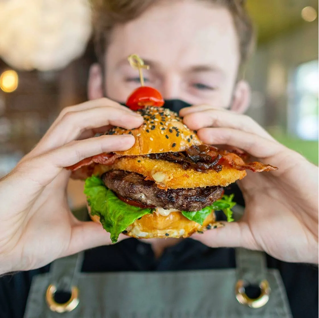
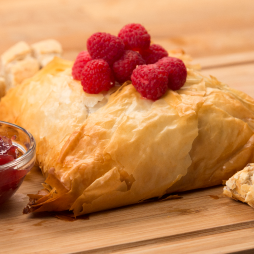
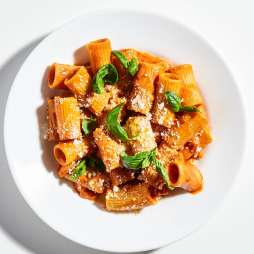
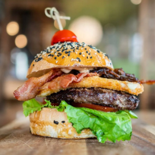
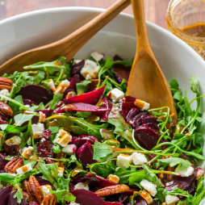
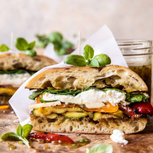
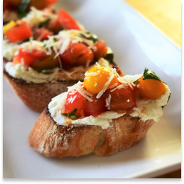

ABOUT LITTLE FORK
At Little Fork, we believe that great food brings people together. Tucked into the heart of the neighborhood, our cozy bistro offers a warm, welcoming space to gather, share stories, and enjoy thoughtfully crafted meals.
Our menu is rooted in the seasons, featuring locally sourced ingredients from nearby farms and producers. Whether it's a crisp autumn salad, a summer-inspired tart, or a hearty winter stew, each dish celebrates the freshness and flavor of what's in season
With an atmosphere as inviting as the food itself, Little Fork is the perfect place to unwind with friends, celebrate a special occasion, or simply savor something delicious. Come for the food, stay for the conversation.

FEATURED MENU

Phyllo Wrapped Baked Brie
Warm, creamy brie baked in crisp phyllo, served with honey and seasonal compote.

Pasta alla Vodka
Penne tossed in a rich tomato-vodka cream sauce with garlic and parmesan.

Gourmet Burger
House-ground beef, aged cheddar, arugula, and garlic aioli on a brioche bun.

Beet Salad
Roasted beets with goat cheese, arugula, and candied walnuts in a citrus vinaigrette.

Rustic Veggie Sandwich
Grilled seasonal vegetables, hummus, and greens on toasted sourdough.

Goat Cheese Bruschetta
Whipped goat cheese, roasted tomatoes, and balsamic glaze on crisp crostini.